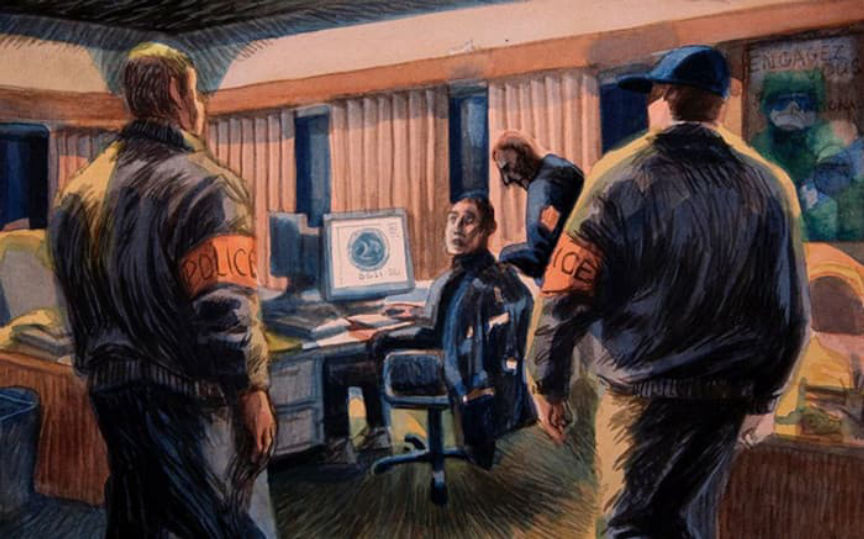
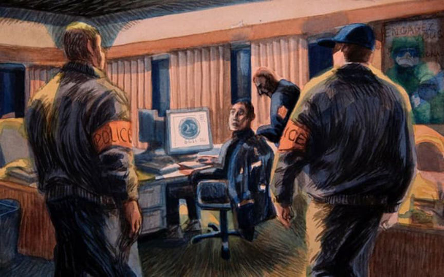

France: Ex-Cop Heads to Prison for Darkweb Dox Sales
~2 min read | Published on 2021-07-29, tagged DarkWeb, General-News using 465 words.
A former French law enforcement officer was sentenced to prison for selling confidential information on the darkweb.
Christophe Boutry, a former police sergeant and agent of the French counterintelligence agency called the Directorate General of Internal Security (DGSI), was sentenced to prison after admitting that he had sold information from law enforcement databases on the darkweb. He sold the information through the darkweb using an account with the username “Haurus.”

Haurus came to the attention of law enforcement in June 2018 during a cybercrime investigation by French law enforcement. During the hearings, prosecutors revealed that Boutry had conducted searches on law enforcement databases at the request of clients on a darkweb forum. He then provided the clients with sensitive information in exchange for Bitcoin.
Under the Haurus username, the defendant sold information on people listed in law enforcement databases for between 100 and 300 euros. He sold through an unidentified forum initially. Boutry, on the forum, met a fraudster who eventually helped Boutry set up a semi-automated storefront where he sold the same information.
During a cybercrime investigation, Boutry was linked to Haurus and arrested at the offices of the DGSI in September 2018.

Boutry’s trial took place at the Nanterre Criminal Court in June 2021. In the course of the four-day trial, Boutry told the court that he started selling confidential information he extracted from police files through the dark web because he was in debt. He also disclosed that he mainly sold identities, addresses, telephone geolocations as well as fake documents.
Boutry also assured the court that he had changed his ways and was no longer involved in crime. Boutry appeared before the criminal court of Nanterre for his sentencing hearing on July 22, 2021. He was found guilty of all charges. The prosecution demanded a sentence of seven years in prison. The presiding judge, however, sentenced Boutry to seven years in prison, two of which were suspended.
The court also sentenced two defendants alongside Boutry as part of the same case. One of the defendants–convicted of working as Boutry’s accomplice–was sentenced to three years in prison, two of which were suspended.
The other defendant, Christophe Nadotti, was accused of being one of Boutry’s clients. He was sentenced to three years in prison. Law enforcement officers are still investigating a case in which this defendant purchased information on people who were later murdered. According to prosecutors, Nadotti purchased information on individuals involved in organized crime and his purchases undoubtedly resulted in a number of murders. His searches included:
[W]ell-known names of heads of drug networks involved in the bloody drug wars. The orders were clearly worded. For example: “Details about his visits to certain locations plus everything possible, number, where he sleeps.”
Christophe Boutry, a former police sergeant and agent of the French counterintelligence agency called the Directorate General of Internal Security (DGSI), was sentenced to prison after admitting that he had sold information from law enforcement databases on the darkweb. He sold the information through the darkweb using an account with the username “Haurus.”
The General Directorate for Internal Security
Haurus came to the attention of law enforcement in June 2018 during a cybercrime investigation by French law enforcement. During the hearings, prosecutors revealed that Boutry had conducted searches on law enforcement databases at the request of clients on a darkweb forum. He then provided the clients with sensitive information in exchange for Bitcoin.
Under the Haurus username, the defendant sold information on people listed in law enforcement databases for between 100 and 300 euros. He sold through an unidentified forum initially. Boutry, on the forum, met a fraudster who eventually helped Boutry set up a semi-automated storefront where he sold the same information.
During a cybercrime investigation, Boutry was linked to Haurus and arrested at the offices of the DGSI in September 2018.

The arrest, which took place at DSGI offices, was described as an “unusual scene” | leparisien
Boutry’s trial took place at the Nanterre Criminal Court in June 2021. In the course of the four-day trial, Boutry told the court that he started selling confidential information he extracted from police files through the dark web because he was in debt. He also disclosed that he mainly sold identities, addresses, telephone geolocations as well as fake documents.
Boutry also assured the court that he had changed his ways and was no longer involved in crime. Boutry appeared before the criminal court of Nanterre for his sentencing hearing on July 22, 2021. He was found guilty of all charges. The prosecution demanded a sentence of seven years in prison. The presiding judge, however, sentenced Boutry to seven years in prison, two of which were suspended.
The court also sentenced two defendants alongside Boutry as part of the same case. One of the defendants–convicted of working as Boutry’s accomplice–was sentenced to three years in prison, two of which were suspended.
The other defendant, Christophe Nadotti, was accused of being one of Boutry’s clients. He was sentenced to three years in prison. Law enforcement officers are still investigating a case in which this defendant purchased information on people who were later murdered. According to prosecutors, Nadotti purchased information on individuals involved in organized crime and his purchases undoubtedly resulted in a number of murders. His searches included:
[W]ell-known names of heads of drug networks involved in the bloody drug wars. The orders were clearly worded. For example: “Details about his visits to certain locations plus everything possible, number, where he sleeps.”